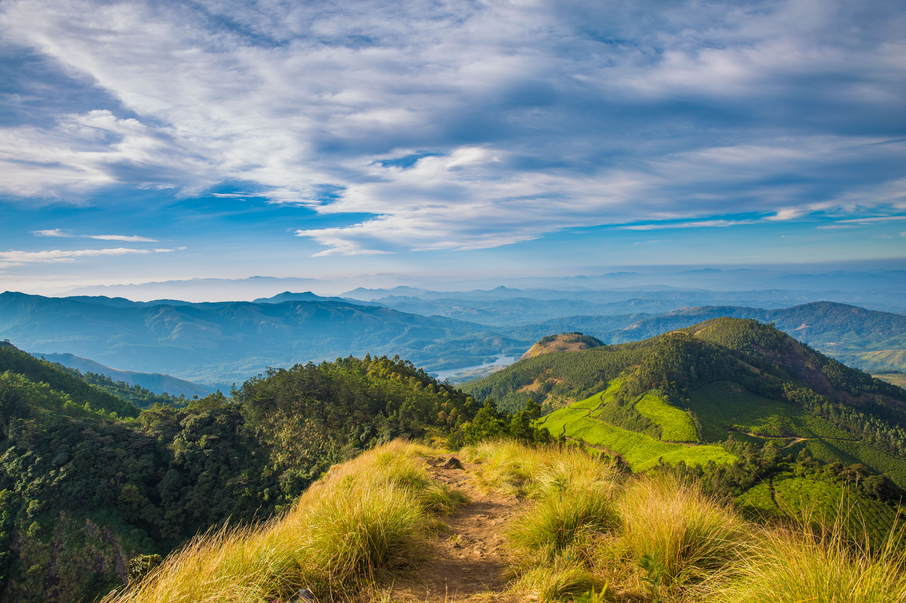
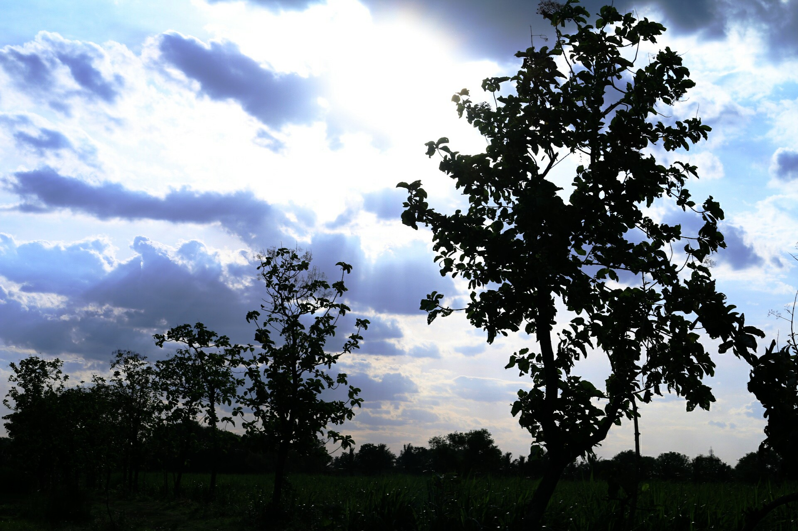
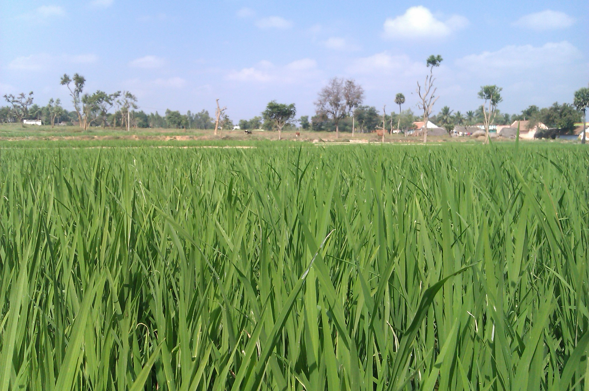
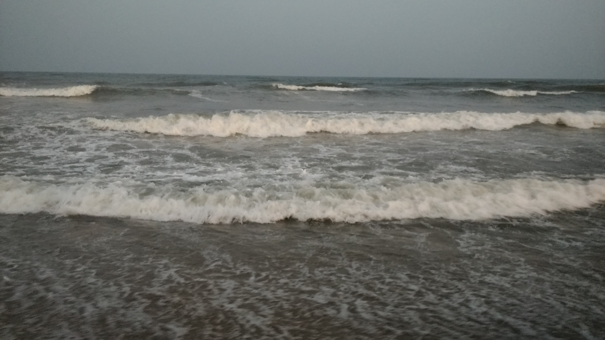
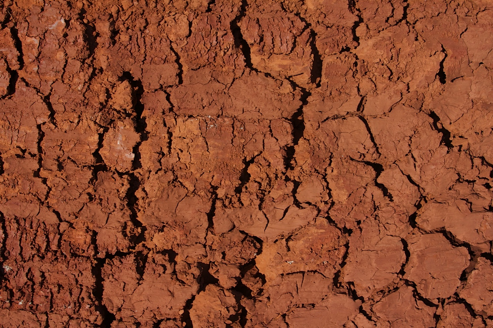

சங்க இலக்கிய ஐந்திணைகள் — The Five Sangam Landscapes
The Sangam poets uniquely classified Tamilakam into five distinct eco-poetic landscapes (Ainthinai), each reflecting a natural terrain, deity, floral emblem, and human emotion.

மலையும் மலை சார்ந்த இடமும்Kurinji
குறிஞ்சி நிலம்
Terrain: Western Ghats Misty Mountains • Deity: சேயோன் (Murugan) • Theme: புணர்தல் (Union of Lovers) • Kurinji Blooms

காடும் காடு சார்ந்த இடமும்Mullai
முல்லை நிலம்
Terrain: Pastoral Forests & Woodlands • Deity: மாயோன் (Mayon / Vishnu) • Theme: இருத்தல் (Patient Hopeful Waiting) • Wild Jasmine

வயலும் வயல் சார்ந்த இடமும்Marutham
மருதம் நிலம்
Terrain: Kaveri Basin Emerald Paddy Fields • Deity: வேந்தன் (Vendan / Indra) • Theme: ஊடல் (Domestic Harmony) • Red Lotus

கடலும் கடல் சார்ந்த இடமும்Neidhal
நெய்தல் நிலம்
Terrain: Coromandel Seacoast & Waves • Deity: வருணன் (Varuna) • Theme: இரங்கல் (Anxious Sea Longing) • White Water Lily

வறண்ட மணலும் சுடுமணலும்Paalai
பாலை நிலம்
Terrain: Parched Wasteland & Sun-baked Soil • Deity: கொற்றவை (Kotravai) • Theme: பிரிதல் (Dangerous Desert Journey) • Paalai Tree